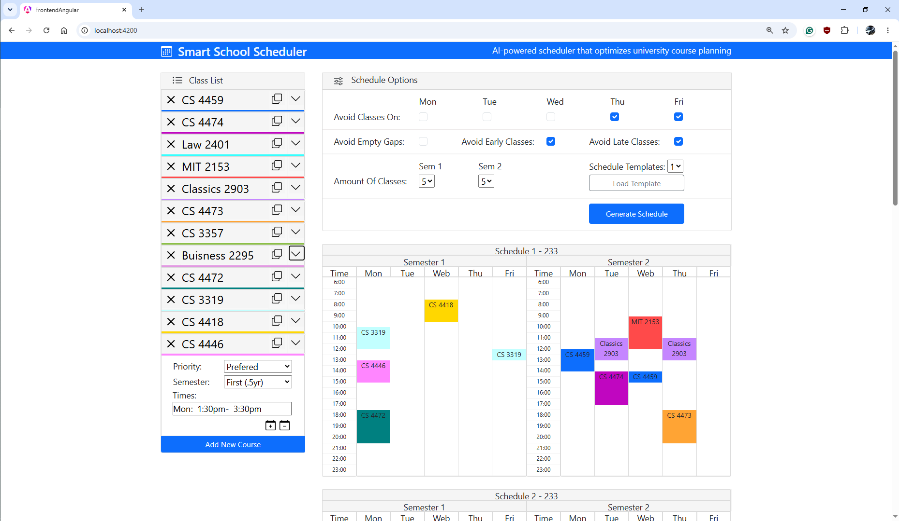

Smart Scheduler
Developed a web application designed to help college students optimize their class schedules using a heuristic tree search algorithm. The platform allows users to customize scheduling parameters and constraints based on their needs. It then generates multiple optimized shedules, helping students plan courses more efficiently.
